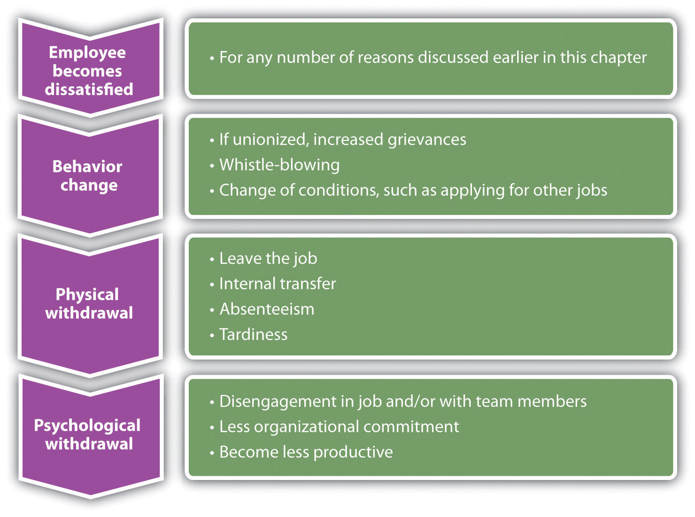

There are a number of theories that attempt to describe what makes a satisfied employee versus an unsatisfied employee. Knowing what motivates us—and what doesn’t—is the key to choosing the right career path. It may be surprising, but much of what makes us satisfied or unsatisfied at work has little to do with money. We will discuss some of these theories next.
Have you ever felt unhappy at a job? If you have, consider how you went through the process of being unhappy—because for most of us, we start out happy but then gradually become unhappy. One of the basic theories is the progression of job withdrawal theory, developed by Dan Farrell and James Petersen.Dan Farrell and James C. Petersen, “Commitment, Absenteeism and Turnover of New Employees: A Longitudinal Study,” Human Relations 37, no. 8 (August 1984): 681–92, accessed August 26, 2011, http://libres.uncg.edu/ir/uncg/f/J_Petersen_Commitment_1984.pdf. It says that people develop a set of behaviors in order to avoid their work situation. These behaviors include behavior change, physical withdrawal, and psychological withdrawal.
Within the behavior change area, an employee will first try to change the situation that is causing the dissatisfaction. For example, if the employee is unhappy with the management style, he or she might consider asking for a department move. In the physical withdrawal phase, the employee does one of the following:
If an employee is unable to leave the job situation, he or she will experience psychological withdrawal. They will become disengaged and may show less job involvement and commitment to the organization, which can create large costs to the organization, such as dissatisfied customers, not to mention the cost to employee and his or her unhappiness in the job.
Often, our process of job withdrawal has to do with our lack of motivation, which we will discuss in the next section.
Figure 6.1 Process of Job Withdrawal
Between 1927 and 1932, a series of experiments were conducted by Elton Mayo in the Western Electric Hawthorne Works company in Illinois.Elton Mayo, The Social Problems of an Industrial Civilization (1949; repr., New York: Arno Press, 2007). Mayo developed these experiments to see how the physical and environmental factors of the workplace, such as lighting and break times, would affect employee motivation.
This was some of the first research performed that looked at human motivation at work. His results were surprising, as he found that no matter which experiments were performed, worker output improved. His conclusion and explanation for this was the simple fact the workers were happy to receive attention from researchers who expressed interest in them. As a result, these experiments, scheduled to last one year, extended to five years to increase the knowledge base about human motivation.
The implication of this research applies to us as employees, even today. It tells us that our supervisors and managers should try to do things that make us feel valued. If not, we need to find ways to feel we add value to the organization.
In 1943, Abraham Maslow developed what was known as the theory of human motivation.Abraham Maslow, Toward a Psychology of Being, 3rd ed. (New York: Wiley, 1999). His theory was developed in an attempt to explain human motivation. According to Maslow, there is a hierarchy of five needs, and as one level of need is satisfied, it will no longer be a motivator. In other words, people start at the bottom of the hierarchy and work their way up. Maslow’s hierarchy consists of the following:
Physiological needs are our most basic needs, including food, water, and shelter. Safety needs at work might include feeling safe in the actual physical environment or job security. As humans, we have the basic need to spend time with others. Esteem needs refer to the need we have to feel good about ourselves. Finally, self-actualization needs are the needs we have to better ourselves.
The implications of his research tell us, for example, that as long as our physiological needs are met, increased pay may not be a motivator. Needs might include, for example, fair pay, safety standards at work, opportunities to socialize, compliments to help raise our esteem, and training opportunities to further develop ourselves.
This video explains Maslow’s hierarchy in detail. After reviewing the video, which of Maslow’s needs are you currently focused upon?
In 1959, Frederick Herzberg published The Motivation to Work,Frederick Herzberg, Bernard Mausner, and Barbara Bloch Snyderman, The Motivation to Work (New Brunswick, NJ: Transaction Publishers, 1993). which described his studies to determine which aspects in a work environment caused satisfaction or dissatisfaction. He performed interviews in which employees were asked what pleased and displeased them about their work. From his research, he developed the motivation-hygiene theory to explain these results.
The things that satisfied the employees were motivators, while the dissatisfiers were the hygiene factors. He further said the hygiene factors were not necessarily motivators, but if not present in the work environment, they would actually cause demotivation. In other words, the hygiene factors are expected and assumed, while they may not necessarily motivate.
His research showed the following as the top six motivation factorsPart of a theory developed by Herzberg that says some things will motivate an employee, such as being given responsibility.:
The following were the top six hygiene factorsPart of a theory developed by Herzberg that says some things will not necessarily motivate employees but will cause dissatisfaction if not present.:
The implication of this research is clear. Salary, for example, is on the hygiene factor list. Fair pay is expected, but it doesn’t actually motivate us to do a better job. On the other hand, programs to further develop us as employees, such as management training programs, would be considered a motivator. Therefore, the actual motivators tend to be the work and recognition surrounding the work performed.
Douglas McGregor proposed the X-Y theory in his 1960 book called The Human Side of Enterprise.Douglas McGregor, The Human Side of Enterprise (1960; repr., New York: McGraw-Hill, 2006). McGregor’s theory gives us a starting point to understanding how management style can impact the retention of employees. His theory suggests two fundamental approaches to managing people. Theory X managersAccording to McGregor, a type of manager who has a negative approach to employee motivation., who have an authoritarian management style, have the following fundamental management beliefs:
Theory Y managersAccording to McGregor, a type of manager who has a positive approach to employee motivation., on the other hand, have the following beliefs:
As you can see, these two belief systems have a large variance, and managers who manage under the X theory may have a more difficult time retaining workers.
It is unknown for sure where this term was first used, although some believe it was coined in the 1700s during the Seven Years’ War. In business today, the stick approach refers to “poking and prodding” to get employees to do something. The carrot approach refers to the offering of some reward or incentive to motivate employees. Many companies use the stick approach, as in the following examples:
As you can imagine, the stick approach does little to motivate us in the long term! While it may work for some time, constant threats and prodding do not motivate.
The carrot approach might include the following:
The carrot approach takes a much more positive approach to employee motivation but still may not be effective. For example, this approach can actually demotivate employees if they do not feel the goal is achievable. Has this ever happened to you at work? Some reward was offered, but you knew it wasn't really achievable? If so, you know how this can actually be demotivating! Also, if organizations use this as the only motivational technique, ignoring physiological rewards such as career growth, this could be a detriment as well.
All the employee satisfaction theories we have discussed have implications for our own understanding of what motivates us at work.
Do you know why you do the things you do? The emotional intelligence skill of self-awareness is the key to understanding your own motivations. It isn’t until we understand our own emotions that we can begin to understand what we need to do to motivate ourselves personally and professionally.
Of course, the more motivated we are, the more likely we are to experience career success. Most, if not all, managers want to hire and promote people who show extensive motivation in their job. This is impossible to do if we do not first identify what actually motivates us as individuals. If you are motivated by intrinsic rewards, such as feeling good about your job, you are more likely to be better at your job because you enjoy it! Not only will we be better at our job if we like it, but it is highly likely we will be happier. When we are happier we tend to show better human relations skills, and this happiness can come in part from understanding our own motivations and making sure we choose a career path that matches with our motivations.
This section gave you some ideas on the process people go through when they are not satisfied at work. In addition, we discussed motivation and the various motivational theories that can help us understand our own motivations. But why is this important? As you saw in the opening story, if we understand our own motivations, we can better choose a career path that will make us happy. Also, keep in mind that your motivations may change over time. For example, as a college student your motivation may lie in the ability to make money, but after working for a few years, your motivation may change to look at more flexibility in your job. It is important to keep your motivations, needs, and wants in check, because what you want today will change over time. Consider the recent twenty-two-year-old college graduate. What his priorities are today will change as his life changes; for example, meeting a significant other and maybe raising a family can make his priorities change when he is thirty-two. To continually understand our motivations, it is important to keep track, perhaps on a yearly basis, of what our priorities are. This can help us make the right career choices later on.